PRE-LAUNCH MOCKUPS
Waitlist & Beta Signups
Each mockup links the live website/assets/site.css and reuses markup from index.html and the guide template. Utilities not yet in the compiled CSS are inlined per page. Full rationale, change table and backend spec: ../website_changes_and_mockups.md.
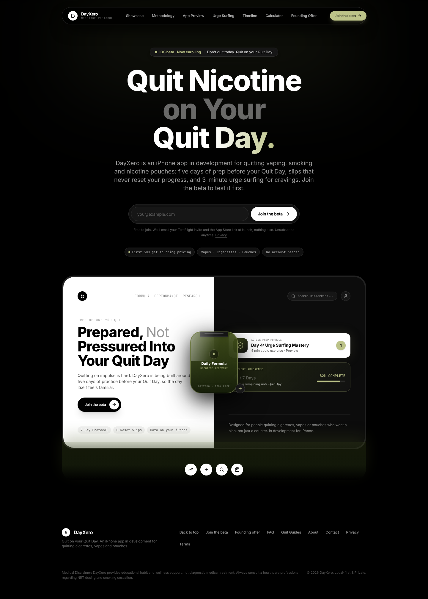
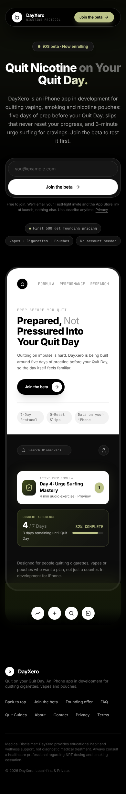
b-pricing-founding.html (b) Founding-member pricing Pricing keeps the three-card rhythm but labels prices as planned. Plan buttons no longer fire the "Ready for App Store Checkout" toast: Monthly/Lifetime expand into a "Notify me" form (plan interest captured), Annual carries the founding offer and its own form. FAQ rewritten for pre-launch.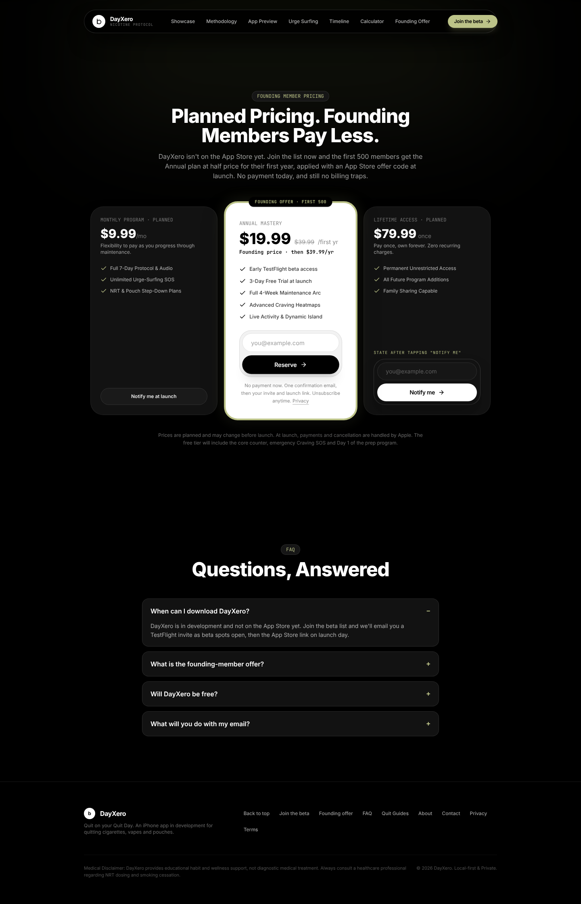
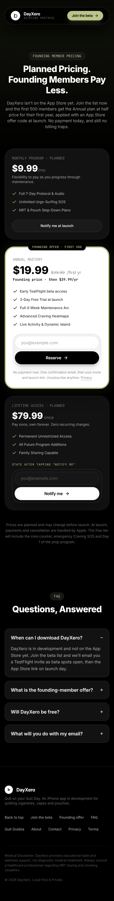
c-success-referral.html (c) After signup State 1 replaces the form inline: confirm-your-email card (double opt-in). State 2 is /beta/confirmed: queue position, founding badge, copyable referral link, share buttons, friends-joined progress bar and what happens next.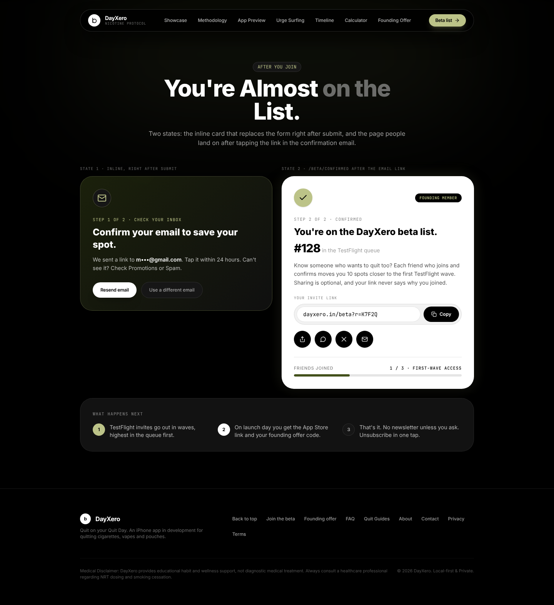
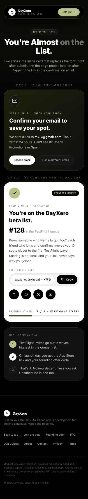
d-guide-cta-sticky.html (d) Guide CTAs + sticky bar Guide pages (build_guides.py): nav CTA to /beta/, a glass mid-article CTA after the 3rd section, the end porcelain aside becomes a form, and a sticky mobile pill bar that hides while a form is visible and can be dismissed.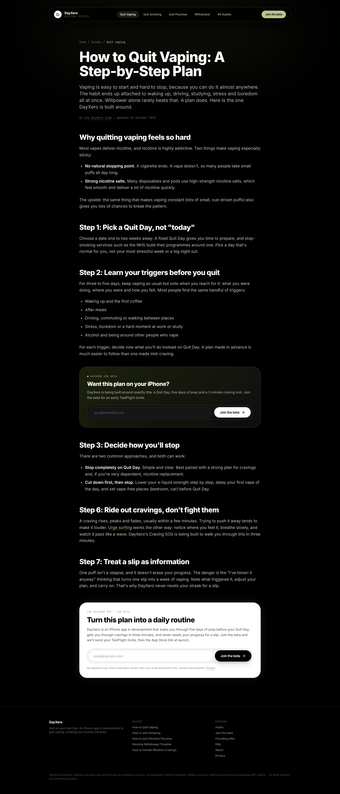
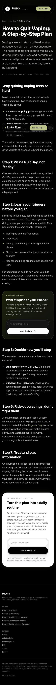
e-beta-page.html (e) /beta page Dedicated waitlist URL for social bios, Reddit/TikTok links and referral links (?r=CODE shows the "A friend invited you" pill). Form, three benefit cards, how-the-beta-works steps, beta FAQ.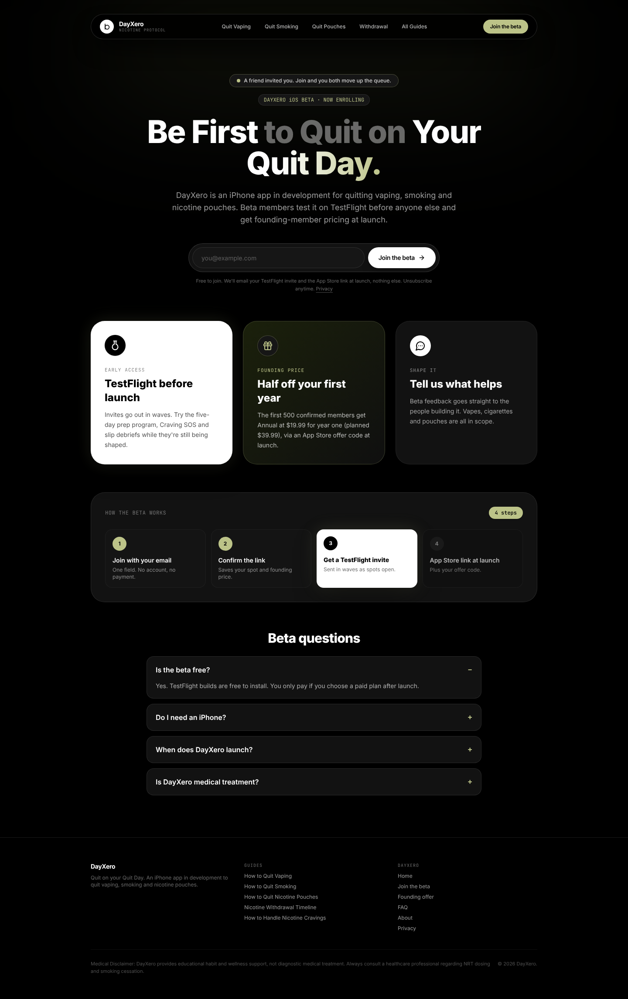
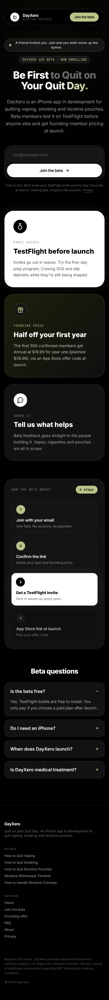
Extra screenshots
Sticky bar in context (390px)
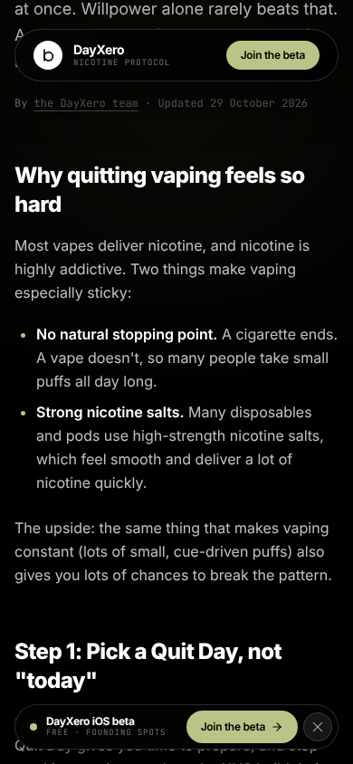
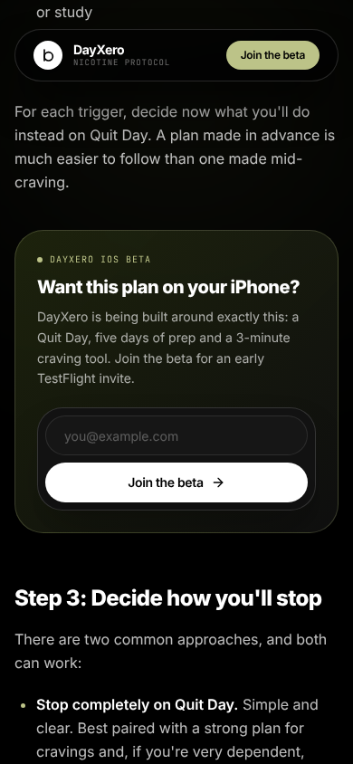
Left: bar visible mid-article. Right: bar hidden because the inline form is on screen.